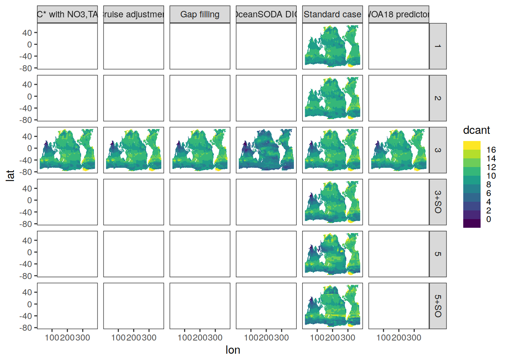
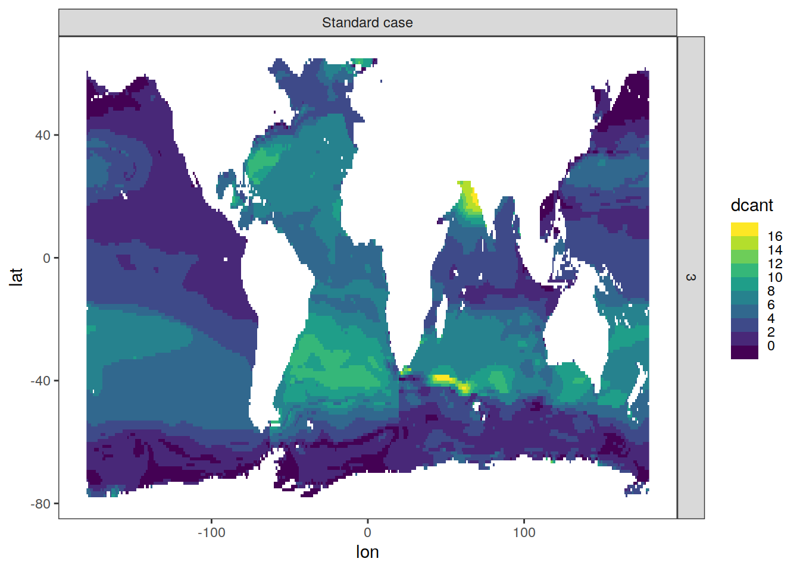
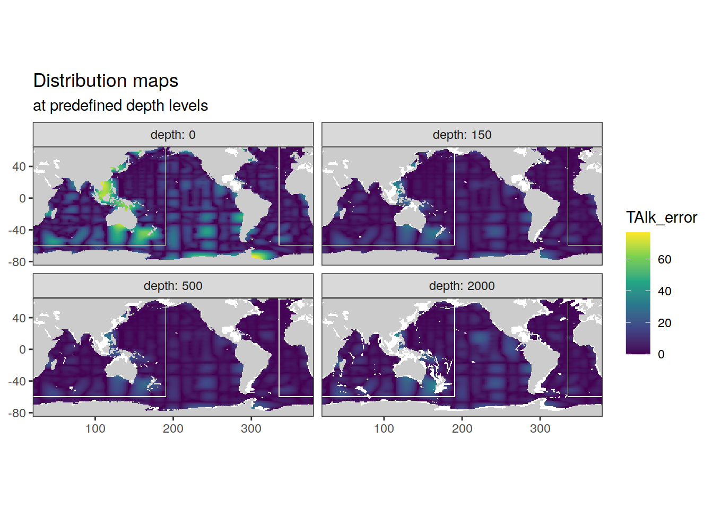
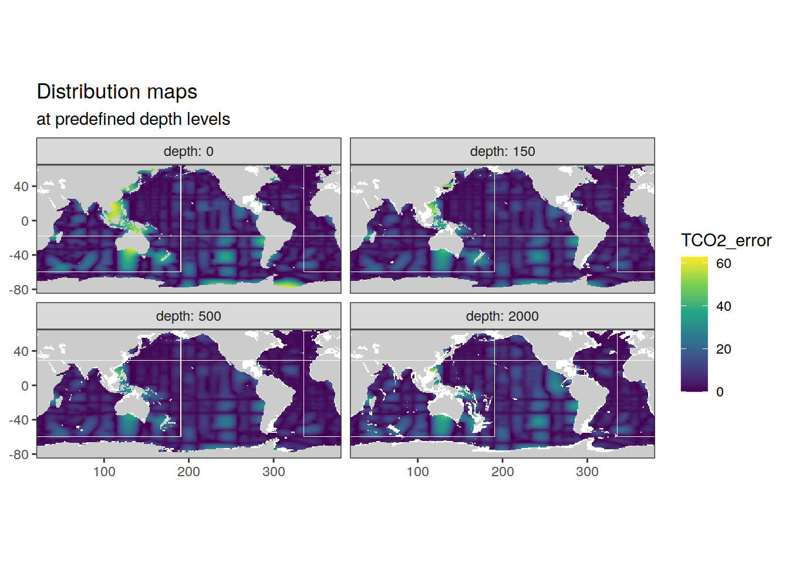

Last updated: 2023-10-20
Checks: 7 0
Knit directory:
ocean_interior_acidification/
This reproducible R Markdown analysis was created with workflowr (version 1.7.0). The Checks tab describes the reproducibility checks that were applied when the results were created. The Past versions tab lists the development history.
Great! Since the R Markdown file has been committed to the Git repository, you know the exact version of the code that produced these results.
Great job! The global environment was empty. Objects defined in the global environment can affect the analysis in your R Markdown file in unknown ways. For reproduciblity it’s best to always run the code in an empty environment.
The command set.seed(20230202) was run prior to running
the code in the R Markdown file. Setting a seed ensures that any results
that rely on randomness, e.g. subsampling or permutations, are
reproducible.
Great job! Recording the operating system, R version, and package versions is critical for reproducibility.
Nice! There were no cached chunks for this analysis, so you can be confident that you successfully produced the results during this run.
Great job! Using relative paths to the files within your workflowr project makes it easier to run your code on other machines.
Great! You are using Git for version control. Tracking code development and connecting the code version to the results is critical for reproducibility.
The results in this page were generated with repository version c6e042c. See the Past versions tab to see a history of the changes made to the R Markdown and HTML files.
Note that you need to be careful to ensure that all relevant files for
the analysis have been committed to Git prior to generating the results
(you can use wflow_publish or
wflow_git_commit). workflowr only checks the R Markdown
file, but you know if there are other scripts or data files that it
depends on. Below is the status of the Git repository when the results
were generated:
Ignored files:
Ignored: .Rhistory
Ignored: .Rproj.user/
Ignored: output/
Untracked files:
Untracked: code/Workflowr_project_managment.R
Untracked: code/start_job.R
Unstaged changes:
Modified: analysis/average_OIA.Rmd
Note that any generated files, e.g. HTML, png, CSS, etc., are not included in this status report because it is ok for generated content to have uncommitted changes.
These are the previous versions of the repository in which changes were
made to the R Markdown (analysis/compute_OIA.Rmd) and HTML
(docs/compute_OIA.html) files. If you’ve configured a
remote Git repository (see ?wflow_git_remote), click on the
hyperlinks in the table below to view the files as they were in that
past version.
| File | Version | Author | Date | Message |
|---|---|---|---|---|
| Rmd | c6e042c | jens-daniel-mueller | 2023-10-20 | add uncertainty cases for DIC and TA climatologies |
| html | e65a33b | jens-daniel-mueller | 2023-03-16 | Build site. |
| Rmd | 183442c | jens-daniel-mueller | 2023-03-15 | add buffer calculation with incremental DIC addition |
| html | 769556d | jens-daniel-mueller | 2023-03-03 | Build site. |
| Rmd | 61000c9 | jens-daniel-mueller | 2023-03-03 | calculate climatological state of co2 system in 2002 |
| html | ba04f64 | jens-daniel-mueller | 2023-02-28 | Build site. |
| Rmd | 08005cc | jens-daniel-mueller | 2023-02-28 | harmonized Cant coverage, added DIC and DIC+temp fields |
| html | c33032f | jens-daniel-mueller | 2023-02-27 | Build site. |
| Rmd | cc6e2c7 | jens-daniel-mueller | 2023-02-24 | run individual cases with buffer computation and temperature impact |
| Rmd | a5bf029 | jens-daniel-mueller | 2023-02-24 | run individual cases with buffer computation and temperature impact |
| Rmd | fd08227 | jens-daniel-mueller | 2023-02-24 | run individual cases with buffer computation and temperature impact |
| html | 383700b | jens-daniel-mueller | 2023-02-23 | Build site. |
| Rmd | 5796fdb | jens-daniel-mueller | 2023-02-23 | test buffer computation and temperature impact |
| html | eaf95ed | jens-daniel-mueller | 2023-02-23 | Build site. |
| Rmd | cdf77c4 | jens-daniel-mueller | 2023-02-22 | run without negative Cant |
| html | db714d8 | jens-daniel-mueller | 2023-02-16 | Build site. |
| Rmd | 680eeb8 | jens-daniel-mueller | 2023-02-15 | calculated OIA for all cases |
| html | b4e6d1c | jens-daniel-mueller | 2023-02-04 | Build site. |
| Rmd | 8fcace6 | jens-daniel-mueller | 2023-02-03 | calculated OIA layer |
| html | 78b3180 | jens-daniel-mueller | 2023-02-03 | Build site. |
| Rmd | dde599d | jens-daniel-mueller | 2023-02-03 | completed basis OIA computation |
| html | db079b9 | jens-daniel-mueller | 2023-02-02 | Build site. |
| Rmd | 808fabc | jens-daniel-mueller | 2023-02-02 | added RMD for computation |
center <- -160
boundary <- center + 180
target_crs <- paste0("+proj=robin +over +lon_0=", center)
# target_crs <- paste0("+proj=eqearth +over +lon_0=", center)
# target_crs <- paste0("+proj=eqearth +lon_0=", center)
# target_crs <- paste0("+proj=igh_o +lon_0=", center)
worldmap <- ne_countries(scale = 'small',
type = 'map_units',
returnclass = 'sf')
worldmap <- worldmap %>% st_break_antimeridian(lon_0 = center)
worldmap_trans <- st_transform(worldmap, crs = target_crs)
# ggplot() +
# geom_sf(data = worldmap_trans)
coastline <- ne_coastline(scale = 'small', returnclass = "sf")
coastline <- st_break_antimeridian(coastline, lon_0 = 200)
coastline_trans <- st_transform(coastline, crs = target_crs)
# ggplot() +
# geom_sf(data = worldmap_trans, fill = "grey", col="grey") +
# geom_sf(data = coastline_trans)
bbox <- st_bbox(c(xmin = -180, xmax = 180, ymax = 65, ymin = -78), crs = st_crs(4326))
bbox <- st_as_sfc(bbox)
bbox_trans <- st_break_antimeridian(bbox, lon_0 = center)
bbox_graticules <- st_graticule(
x = bbox_trans,
crs = st_crs(bbox_trans),
datum = st_crs(bbox_trans),
lon = c(20, 20.001),
lat = c(-78,65),
ndiscr = 1e3,
margin = 0.001
)
bbox_graticules_trans <- st_transform(bbox_graticules, crs = target_crs)
rm(worldmap, coastline, bbox, bbox_trans)
# ggplot() +
# geom_sf(data = worldmap_trans, fill = "grey", col="grey") +
# geom_sf(data = coastline_trans) +
# geom_sf(data = bbox_graticules_trans)
lat_lim <- ext(bbox_graticules_trans)[c(3,4)]*1.002
lon_lim <- ext(bbox_graticules_trans)[c(1,2)]*1.005
# ggplot() +
# geom_sf(data = worldmap_trans, fill = "grey90", col = "grey90") +
# geom_sf(data = coastline_trans) +
# geom_sf(data = bbox_graticules_trans, linewidth = 1) +
# coord_sf(crs = target_crs,
# ylim = lat_lim,
# xlim = lon_lim,
# expand = FALSE) +
# theme(
# panel.border = element_blank(),
# axis.text = element_blank(),
# axis.ticks = element_blank()
# )
latitude_graticules <- st_graticule(
x = bbox_graticules,
crs = st_crs(bbox_graticules),
datum = st_crs(bbox_graticules),
lon = c(20, 20.001),
lat = c(-60,-30,0,30,60),
ndiscr = 1e3,
margin = 0.001
)
latitude_graticules_trans <- st_transform(latitude_graticules, crs = target_crs)
latitude_labels <- data.frame(lat_label = c("60°N","30°N","Eq.","30°S","60°S"),
lat = c(60,30,0,-30,-60)-4, lon = c(35)-c(0,2,4,2,0))
latitude_labels <- st_as_sf(x = latitude_labels,
coords = c("lon", "lat"),
crs = "+proj=longlat")
latitude_labels_trans <- st_transform(latitude_labels, crs = target_crs)
# ggplot() +
# geom_sf(data = worldmap_trans, fill = "grey", col = "grey") +
# geom_sf(data = coastline_trans) +
# geom_sf(data = bbox_graticules_trans) +
# geom_sf(data = latitude_graticules_trans,
# col = "grey60",
# linewidth = 0.2) +
# geom_sf_text(data = latitude_labels_trans,
# aes(label = lat_label),
# size = 3,
# col = "grey60")basinmask <- basinmask %>%
filter(MLR_basins == "5") %>%
select(lon, lat, basin_AIP)library(units)
install_unit(symbol = "decade", def = "10 years")
file_out <- paste0(path_out, "dcant_emlr_cstar_mueller_94-04-14.nc")
dcant_3d_read_mdim <-
read_mdim(file_out)
# st_get_dimension_values(dcant_3d_read_mdim, "depth")
ggplot() +
geom_stars(data = dcant_3d_read_mdim %>%
filter(period == "1994 - 2004",
depth == set_units(50, m))) +
facet_grid(MLR_configuration ~ MLR_basin_mask) +
scale_fill_viridis_b(breaks = c(-Inf, seq(0,16,2), Inf),
na.value = "transparent")
dcant_3d_tibble <- dcant_3d_read_mdim %>%
filter(MLR_configuration == "Standard case",
MLR_basin_mask == "3",
period == "1994 - 2004") %>%
as_tibble()
rm(dcant_3d_read_mdim, file_out)
dcant_3d_tibble <- dcant_3d_tibble %>%
drop_na()
# remove negative delta Cant
# dcant_3d_tibble <- dcant_3d_tibble
# mutate(dcant = if_else(dcant < 0, 0, dcant))
dcant_3d_tibble %>%
filter(depth == set_units(500,m),
MLR_configuration == "Standard case",
MLR_basin_mask == "3") %>%
drop_units() %>%
ggplot() +
geom_raster(aes(lon, lat, fill = dcant)) +
facet_grid(MLR_basin_mask ~ MLR_configuration) +
scale_fill_viridis_b(breaks = c(-Inf, seq(0, 16, 2), Inf),
na.value = "transparent")
file_out <- paste0(path_out, "volume_mask_emlr_cstar_mueller_94-04-14.nc")
dcant_3d_read_mdim <-
read_mdim(file_out)
dcant_3d_read_mdim %>%
st_get_dimension_values("depth")
volume <- dcant_3d_read_mdim %>%
as_tibble() %>%
drop_na()
file_out <- paste0(path_out, "inv_dcant_emlr_cstar_mueller_94-04-14.nc")
dcant_3d_read_mdim <-
read_mdim(file_out)
dcant_3d_read_mdim %>% st_get_dimension_values("lat")
dcant_inv <- dcant_3d_read_mdim %>%
filter(MLR_configuration == "Standard case",
MLR_basin_mask == "3",
period == "1994 - 2004") %>%
as_tibble() %>%
drop_na()
file_out <- paste0(path_out, "surface_area_mask_emlr_cstar_mueller_94-04-14.nc")
dcant_3d_read_mdim <-
read_mdim(file_out)
surface_area <- dcant_3d_read_mdim %>%
as_tibble() %>%
drop_na()
volume <- full_join(volume,
surface_area)
p1 <-
left_join(dcant_3d_tibble,
volume) %>%
filter(depth <= set_units(3000, m)) %>%
drop_units() %>%
group_by(lat, lon) %>%
summarise(dcant = sum(dcant * 1.03 * volume / 1000) / mean(surface_area)) %>%
ungroup() %>%
ggplot(aes(lon, lat, fill = dcant)) +
geom_tile() +
scale_fill_divergent(limits = c(-2, 2) * 1e1) +
labs(title = "3000") +
coord_quickmap()
p2 <-
left_join(dcant_3d_tibble,
volume) %>%
filter(depth <= set_units(2500, m)) %>%
drop_units() %>%
group_by(lat, lon) %>%
summarise(dcant = sum(dcant * 1.03 * volume / 1000) / mean(surface_area)) %>%
ungroup() %>%
ggplot(aes(lon, lat, fill = dcant)) +
geom_tile() +
scale_fill_divergent(limits = c(-2, 2) * 1e1) +
labs(title = "2500") +
coord_quickmap()
p3 <-
left_join(dcant_3d_tibble,
volume) %>%
filter(depth <= set_units(3000, m)) %>%
mutate(volume = if_else(depth == set_units(3000, m),
volume * 0.5,
volume)) %>%
drop_units() %>%
group_by(lat, lon) %>%
summarise(dcant = sum(dcant * 1.03 * volume / 1000) / mean(surface_area)) %>%
ungroup() %>%
ggplot(aes(lon, lat, fill = dcant)) +
geom_tile() +
scale_fill_divergent(limits = c(-2, 2) * 1e1) +
labs(title = "3000 halfed") +
coord_quickmap()
p4 <-
dcant_inv %>%
drop_units() %>%
ggplot(aes(lon, lat, fill = dcant_inv)) +
geom_tile() +
scale_fill_divergent(limits = c(-2, 2) * 1e1,
na.value = "white") +
labs(title = "3000 direct") +
coord_quickmap()
p1 + p2 + p3 + p4library(units)
file_out <- paste0(path_out, "dcant_emlr_cstar_mueller_94-04-14.nc")
dcant_3d_read_mdim <-
read_mdim(file_out,
make_units = FALSE)
ggplot() +
geom_stars(data = dcant_3d_read_mdim %>%
filter(period == "1994 - 2004",
depth == set_units(50, m))) +
facet_grid(MLR_basin_mask~MLR_configuration) +
scale_fill_viridis_b(breaks = c(-Inf, seq(0,16,2), Inf),
na.value = "transparent")
dcant_3d_tibble <- dcant_3d_read_mdim %>%
# filter(MLR_configuration == "Standard case",
# MLR_basin_mask == "3") %>%
as_tibble() %>%
drop_units()
rm(dcant_3d_read_mdim, file_out)
dcant_3d_tibble <- dcant_3d_tibble %>%
drop_na()
# remove negative delta Cant
# dcant_3d_tibble <- dcant_3d_tibble
# mutate(dcant = if_else(dcant < 0, 0, dcant))
dcant_3d_tibble %>%
filter(depth == 500,
MLR_configuration == "Standard case",
MLR_basin_mask == "3") %>%
ggplot() +
geom_raster(aes(lon, lat, fill = dcant)) +
facet_grid(MLR_basin_mask ~ MLR_configuration) +
scale_fill_viridis_b(breaks = c(-Inf, seq(0, 16, 2), Inf),
na.value = "transparent")
S04_cant_3d <-
read_csv(paste(path_preprocessing,
"S04_tcant_3d.csv",
sep = ""))
# remove negative delta Cant
# S04_cant_3d <- S04_cant_3d %>%
# mutate(tcant = if_else(tcant < 0, 0, tcant))path_glodapv2_2016b <-
"/nfs/kryo/work/datasets/gridded/ocean/interior/observation/glodap/v2.2016b/"
file_list <- c(
"GLODAPv2.2016b.TAlk.nc",
"GLODAPv2.2016b.TCO2.nc"
)
for (file in file_list) {
# file <- file_list[1]
print(file)
# open file
# extract parameter name
parameter <-
str_split(file, pattern = "GLODAPv2.2016b.", simplify = TRUE)[2]
parameter <-
str_split(parameter, pattern = ".nc", simplify = TRUE)[1]
parameter <- paste0(parameter,"_error")
clim <-
read_stars(paste(path_glodapv2_2016b, file, sep = ""),
sub = parameter)
#convert to table
clim_tibble <- clim %>%
as_tibble()
# harmonize column names
clim_tibble <- clim_tibble %>%
rename(lat = y,
lon = x,
depth = depth_surface)
clim_tibble <- clim_tibble %>%
mutate(lat = lat - 90,
lon = lon + 20)
# clim_tibble %>%
# filter(depth == 0) %>%
# ggplot(aes(lon, lat, fill = NO3)) +
# geom_raster()
# join with basin mask and remove data outside basin mask
clim_tibble <- inner_join(clim_tibble, basinmask)
# determine bottom depth
bottom_depth <- clim_tibble %>%
filter(!is.na(!!sym(parameter))) %>%
group_by(lon, lat) %>%
summarise(bottom_depth = max(depth)) %>%
ungroup()
# remove data below bottom depth
clim_tibble <- left_join(clim_tibble, bottom_depth)
rm(bottom_depth)
clim_tibble <- clim_tibble %>%
filter(depth <= bottom_depth) %>%
select(-bottom_depth)
# fill NAs with closest value along longitude
clim_tibble <- clim_tibble %>%
group_by(lat, depth, basin_AIP) %>%
arrange(lon) %>%
fill(!!sym(parameter), .direction = "downup") %>%
ungroup()
# remove NAs
clim_tibble <- clim_tibble %>%
drop_na()
# plot maps
print(p_map_climatology(df = clim_tibble,
var = parameter))
# write csv file
if (exists("GLODAP_predictors_error")) {
GLODAP_predictors_error <- full_join(GLODAP_predictors_error, clim_tibble)
}
if (!exists("GLODAP_predictors_error")) {
GLODAP_predictors_error <- clim_tibble
}
}[1] "GLODAPv2.2016b.TAlk.nc"
TAlk_error, 
[1] "GLODAPv2.2016b.TCO2.nc"
TCO2_error, 
rm(clim, clim_tibble, parameter, file, file_list)variables <-
c("TCO2", "TAlk", "PO4", "silicate", "NO3")
# i_variable <- variables[1]
for (i_variable in variables) {
temp <- read_csv(paste(
path_preprocessing,
paste("GLODAPv2_2016_MappedClimatology_", i_variable, ".csv", sep = ""),
sep = ""
))
if (exists("GLODAP_predictors")) {
GLODAP_predictors <- full_join(GLODAP_predictors, temp)
}
if (!exists("GLODAP_predictors")) {
GLODAP_predictors <- temp
}
}
rm(temp, i_variable, variables)
GLODAP_predictors <- GLODAP_predictors %>%
rename(phosphate = PO4,
nitrate = NO3,
talk = TAlk,
tco2 = TCO2)
# removed na's attributable to slightly different coverage of predictor fields
GLODAP_predictors <- GLODAP_predictors %>%
drop_na()WOA18_predictors <-
read_csv(paste(path_preprocessing,
"WOA18_sal_temp.csv",
sep = ""))
WOA18_predictors_nuts_O2 <-
read_csv(paste(path_preprocessing,
"WOA18_nuts_O2.csv",
sep = ""))# loop over reference years, plus/minus enveloppe years, and month
# to obtain a decadal averaged temperature field
for (i_tref in c(1994, 2004, 2014)) {
# i_tref <- 1994
print(i_tref)
for (i_year in i_tref + seq(-3, 3, 1)) {
# i_year <- i_tref + seq(-2,2,1)[1]
print(i_year)
for (i_month in c("01",
"02",
"03",
"04",
"05",
"06",
"07",
"08",
"09",
"10",
"11",
"12")) {
# i_month <- "01"
print(i_month)
i_temperature_file <-
paste0("CZ16_1_2000m_Temp_year_",
i_year,
"_month_",
i_month,
".nc")
print(i_temperature_file)
tidy_df <-
tidync(paste(path_temperature, i_temperature_file, sep = "/"))
tibble_df <- tidy_df %>%
hyper_tibble()
tibble_df <-
tibble_df %>%
mutate(temp = if_else(temp == 999, NaN, temp))
if (exists("temperature_year")) {
temperature_year <- bind_rows(temperature_year, tibble_df)
}
if (!exists("temperature_year")) {
temperature_year <- tibble_df
}
}
temperature_year <- temperature_year %>%
group_by(lat, lon, depth_std) %>%
summarise(temp = mean(temp, na_rm = TRUE)) %>%
ungroup()
temperature_year <- temperature_year %>%
mutate(year = i_year)
if (exists("temperature_decade")) {
temperature_decade <-
bind_rows(temperature_decade, temperature_year)
}
if (!exists("temperature_decade")) {
temperature_decade <- temperature_year
}
rm(temperature_year)
gc()
}
temperature_decade <- temperature_decade %>%
group_by(lat, lon, depth_std) %>%
summarise(temp = mean(temp, na_rm = TRUE)) %>%
ungroup()
temperature_decade <- temperature_decade %>%
mutate(tref = i_tref)
if (exists("temperature_all")) {
temperature_all <-
bind_rows(temperature_all, temperature_decade)
}
if (!exists("temperature_all")) {
temperature_all <- temperature_decade
}
rm(temperature_decade)
gc()
}
rm(tibble_df,tidy_df, i_month, i_temperature_file, i_tref, i_year)
# rm(temperature_all)
temperature_all <-
temperature_all %>%
rename(depth = depth_std)
temperature_all %>%
distinct(depth) %>%
pull
# change surface depth level from 1 to 0 for consistency with other data
temperature_all <-
temperature_all %>%
mutate(depth = if_else(depth == 1, 0, depth))
temperature_all %>%
filter(depth == 500) %>%
ggplot(aes(lon, lat, fill = temp)) +
geom_tile() +
scale_fill_viridis_c() +
facet_wrap(~tref) +
coord_quickmap()
# calculate decadal temperature change
temperature_all <- temperature_all %>%
arrange(tref) %>%
group_by(lon, lat, depth) %>%
mutate(delta_temp = temp - first(temp)) %>%
ungroup() %>%
select(lon, lat, depth, tref, delta_temp)
temperature_all %>%
filter(depth == 500) %>%
ggplot(aes(lon, lat, fill = delta_temp)) +
geom_tile() +
scale_fill_gradient2() +
facet_wrap( ~ tref) +
coord_quickmap()mobo_dic_dates <-
read_ncdf(paste0(path_mobo, "MPI_MOBO-DIC_2004-2019_Oct2022.nc")) %>%
st_get_dimension_values("juld")
mobo_dic_dates <-
mobo_dic_dates %>%
as_tibble() %>%
rename(date = value) %>%
mutate(year = year(date),
juld = row_number()) %>%
select(juld, year)
mobo_dic <-
tidync(paste0(path_mobo, "MPI_MOBO-DIC_2004-2019_Oct2022.nc")) %>%
hyper_tibble()
mobo_dic <-
full_join(mobo_dic, mobo_dic_dates)
rm(mobo_dic_dates)
mobo_dic_clim <-
mobo_dic %>%
filter(year %in% c(seq(2004,2006,1), seq(2014,2016,1))) %>%
mutate(tref = if_else(year < 2010, "2004", "2014")) %>%
group_by(tref, lon, lat, depth) %>%
summarise(DIC = mean(DIC, na.rm = TRUE)) %>%
ungroup()
rm(mobo_dic)
mobo_dic_clim %>%
distinct(lat) %>%
pull
mobo_dic_clim %>%
distinct(lon) %>%
pull
mobo_dic_clim <-
mobo_dic_clim %>%
mutate(lon = if_else(lon < 20, lon + 360, lon))
mobo_dic_clim %>%
distinct(depth) %>%
pull
mobo_dic_clim %>%
filter(depth == 10) %>%
ggplot(aes(lon, lat, fill = DIC)) +
geom_raster() +
coord_quickmap() +
scale_fill_viridis_c() +
facet_wrap(~ tref)
mobo_dic_clim %>%
filter(depth == 10) %>%
arrange(tref) %>%
group_by(lat, lon) %>%
mutate(delta_DIC = DIC - lag(DIC)) %>%
ungroup() %>%
ggplot(aes(lon, lat, fill = delta_DIC)) +
geom_raster() +
coord_quickmap() +
scale_fill_divergent() +
facet_wrap(~ tref)
gc()WOA18 and GLODAP predictor climatologies are merged. Only horizontal grid cells with observations from both predictor fields are kept.
# join deep water predictors
predictors <- right_join(GLODAP_predictors,
WOA18_predictors)
predictors <- rquery::natural_join(predictors, WOA18_predictors_nuts_O2,
by = c("lon", "lat", "depth", "basin_AIP"),
jointype = "LEFT") %>%
as_tibble()
predictors <- predictors %>%
drop_na()
rm(GLODAP_predictors, WOA18_predictors_nuts_O2, WOA18_predictors)# predictors %>% distinct(depth) %>% pull()
# S04_cant_3d %>% distinct(depth) %>% pull()
# dcant_3d_tibble %>% distinct(depth) %>% pull()
# create depth grid for which all reconstructions are available
coord_grid <- predictors %>%
distinct(lon, lat, depth)
coord_grid <-
inner_join(coord_grid,
dcant_3d_tibble %>%
distinct(lon, lat, depth))
coord_grid <-
inner_join(coord_grid,
S04_cant_3d %>%
distinct(lon, lat, depth))
coord_grid <-
inner_join(coord_grid,
GLODAP_predictors_error %>%
distinct(lon, lat, depth))
# restrict CO2 fields to common grid
predictors <- inner_join(
predictors,
coord_grid
)
dcant_3d_tibble <- inner_join(
dcant_3d_tibble,
coord_grid
)
S04_cant_3d <- inner_join(
S04_cant_3d,
coord_grid
)
GLODAP_predictors_error <- inner_join(
GLODAP_predictors_error,
coord_grid
)
rm(coord_grid)
# join data frames
DIC_1994 <-
inner_join(predictors,
dcant_3d_tibble %>% filter(period == "1994 - 2004") %>%
select(-period))
DIC_1994 <- DIC_1994 %>%
mutate(tco2 = tco2 - 0.8 * dcant)
DIC_2004 <- DIC_1994 %>%
mutate(tco2 = tco2 + dcant)
DIC_1994 <- DIC_1994 %>%
select(-dcant)
DIC_2004 <- DIC_2004 %>%
select(-dcant)
DIC_2014 <-
inner_join(DIC_2004,
dcant_3d_tibble %>% filter(period == "2004 - 2014") %>%
select(-period))
DIC_2014 <- DIC_2014 %>%
mutate(tco2 = tco2 + dcant) %>%
select(-dcant)
DIC_1800 <- inner_join(
DIC_1994 %>% filter(MLR_configuration == "Standard case",
MLR_basin_mask == "3"),
S04_cant_3d %>% select(lon, lat, depth, tcant)
)
DIC_1800 <- DIC_1800 %>%
mutate(tco2 = tco2 - tcant) %>%
select(-tcant)
DIC <- bind_rows(
DIC_1800 %>% mutate(tref = "1800"),
DIC_1994 %>% mutate(tref = "1994"),
DIC_2004 %>% mutate(tref = "2004"),
DIC_2014 %>% mutate(tref = "2014")
)
rm(DIC_1800, DIC_1994, DIC_2004, DIC_2014, predictors, dcant_3d_tibble, S04_cant_3d)DIC_clim_uncertainty <- inner_join(
DIC %>% filter(MLR_configuration == "Standard case",
MLR_basin_mask == "3"),
GLODAP_predictors_error %>% select(-basin_AIP)
)
DIC <- bind_rows(
DIC_clim_uncertainty %>%
mutate(
MLR_configuration = "high DIC low TA",
tco2 = tco2 + TCO2_error,
talk = talk - TAlk_error
),
DIC_clim_uncertainty %>%
mutate(
MLR_configuration = "low DIC high TA",
tco2 = tco2 - TCO2_error,
talk = talk + TAlk_error
),
DIC_clim_uncertainty %>%
mutate(
MLR_configuration = "high DIC",
tco2 = tco2 + TCO2_error
),
DIC_clim_uncertainty %>%
mutate(
MLR_configuration = "low DIC",
tco2 = tco2 - TCO2_error
),
DIC
)
DIC <- DIC %>%
select(-c(TAlk_error, TCO2_error))
rm(DIC_clim_uncertainty, GLODAP_predictors_error)# create DIC fields with variable temperature
DIC_temp <- DIC %>%
filter(tref != 1800,
MLR_configuration == "Standard case",
MLR_basin_mask == 3) %>%
mutate(MLR_configuration = "dCant + temp")
DIC_temp %>%
distinct(tref, MLR_configuration, MLR_basin_mask)
DIC_depths <- DIC_temp %>%
distinct(depth) %>%
filter(depth <= 2000) %>%
pull()
# extend temperature field with DIC depth for interpolation
depth_grid <-
expand_grid(
temperature_all %>%
distinct(lat, lon, tref),
depth = DIC_depths
)
temperature_all <-
full_join(temperature_all,
depth_grid)
rm(depth_grid)
temperature_all <-
temperature_all %>%
group_by(lon, lat, tref) %>%
mutate(count_available = sum(!is.na(delta_temp))) %>%
ungroup()
temperature_all_surface <-
temperature_all %>%
filter(count_available == 1) %>%
select(-count_available) %>%
filter(!is.na(delta_temp))
temperature_all_int <-
temperature_all %>%
filter(count_available >= 2) %>%
select(-count_available) %>%
group_by(lon, lat, tref) %>%
mutate(delta_temp = approxfun(depth, delta_temp, rule = 1)(depth)) %>%
ungroup() %>%
filter(!is.na(delta_temp))
temperature_all <- bind_rows(
temperature_all_surface,
temperature_all_int
)
rm(
temperature_all_surface,
temperature_all_int
)
temperature_all <-
temperature_all %>%
filter(depth %in% DIC_depths)
temperature_all <- temperature_all %>%
mutate(tref = as.character(tref))
temperature_all <- temperature_all %>%
mutate(lon = lon - 0.5,
lon = if_else(lon < 20, lon + 360, lon))
DIC_temp <- inner_join(
DIC_temp,
temperature_all)
DIC_temp <-
DIC_temp %>%
mutate(temp = temp + delta_temp) %>%
select(-delta_temp)
DIC <- bind_rows(
DIC,
DIC_temp
)
rm(DIC_temp, temperature_all)# create DIC fields with variable temperature
DIC_DIC <- DIC %>%
filter(tref %in% c("2004", "2014"),
MLR_configuration %in% c("Standard case", "dCant + temp"),
MLR_basin_mask == 3) %>%
mutate(MLR_configuration = if_else(
MLR_configuration == "Standard case",
"DIC",
"DIC + temp"
))
mobo_dic_clim <-
mobo_dic_clim %>%
mutate(depth = if_else(depth == 2.5, 0, depth))
mobo_dic_clim %>%
distinct(depth) %>%
pull
DIC_DIC <- inner_join(
DIC_DIC,
mobo_dic_clim)
DIC_DIC <-
DIC_DIC %>%
mutate(tco2 = DIC) %>%
select(-DIC)
DIC <- bind_rows(
DIC,
DIC_DIC
)
rm(DIC_DIC, mobo_dic_clim)
gc()# table with cases to loop over
cases <- DIC %>%
distinct(MLR_configuration, MLR_basin_mask)
# cases <- cases %>%
# filter(MLR_basin_mask == "none")
# cases <- cases %>%
# filter(MLR_basin_mask == "3") %>%
# slice(-c(2:6))
# definition of functions to compute incremental and total differences
calc_delta_total <- function(x)
(x - first(x))
calc_delta_interval <- function(x)
(x - lag(x, default = first(x)))for (i in 1:nrow(cases)) {
# i <- 1
i_MLR_configuration <- cases[i, ]$MLR_configuration
i_MLR_basin_mask <- cases[i, ]$MLR_basin_mask
i_DIC <- DIC %>%
filter(MLR_configuration == i_MLR_configuration,
MLR_basin_mask == i_MLR_basin_mask)
acidification <- i_DIC %>%
# head(6) %>%
mutate(
sir(
flag = 15,
var1 = talk * 1e-6,
var2 = tco2 * 1e-6,
S = sal,
T = temp,
P = depth / 10,
Pt = phosphate * 1e-6,
Sit = silicate * 1e-6,
k1k2 = "s20",
kf = "dg",
pHscale = "T"
)
)
rm(i_DIC)
gc()
acidification <- acidification %>%
select(
lon, lat, depth, tref,
MLR_basin_mask, MLR_configuration,
tco2, pH, CO3, OmegaAragonite, OmegaCalcite, SIR, H_free
)
acidification <- acidification %>%
mutate(
CO3 = CO3 * 1e6,
H_free = H_free * 1e3
)
acidification <- acidification %>%
arrange(tref) %>%
group_by(lat, lon, depth, MLR_configuration, MLR_basin_mask) %>%
mutate(across(
.cols = c(
tco2,
pH,
CO3,
OmegaAragonite,
OmegaCalcite,
SIR,
H_free
),
.fns = list(delta_total = calc_delta_total, delta_interval = calc_delta_interval)
)) %>%
ungroup()
acidification %>%
write_csv(paste0(path_OIA,"OIA_",i_MLR_configuration,"_",i_MLR_basin_mask,".csv"))
rm(acidification)
gc()
}for (i in 1:nrow(cases)) {
# i <- 1
i_MLR_configuration <- cases[i,]$MLR_configuration
i_MLR_basin_mask <- cases[i,]$MLR_basin_mask
i_DIC <- DIC %>%
filter(MLR_configuration == i_MLR_configuration,
MLR_basin_mask == i_MLR_basin_mask)
buffer <- i_DIC %>%
# filter(lon == 190.5,
# lat == 0.5,
# depth == 0) %>%
mutate(
buffesm(
flag = 15,
var1 = talk * 1e-6,
var2 = tco2 * 1e-6,
S = sal,
T = temp,
P = depth / 10,
Pt = phosphate * 1e-6,
Sit = silicate * 1e-6,
k1k2 = "s20",
kf = "dg",
pHscale = "T"
)
)
rm(i_DIC)
gc()
buffer <- buffer %>%
select(
c(
lon,
lat,
depth,
tref,
MLR_basin_mask,
MLR_configuration,
gammaDIC,
betaDIC,
omegaDIC,
R
)
)
buffer_trend <- buffer %>%
arrange(tref) %>%
group_by(lat, lon, depth, MLR_configuration, MLR_basin_mask) %>%
mutate(across(
.cols = c(gammaDIC,
betaDIC,
omegaDIC,
R),
.fns = list(delta_total = calc_delta_total, delta_interval = calc_delta_interval)
)) %>%
ungroup()
rm(buffer)
gc()
buffer_trend %>%
write_csv(paste0(path_OIA,"buffer_",i_MLR_configuration,"_",i_MLR_basin_mask,".csv"))
rm(buffer_trend)
gc()
}# cases <- cases %>%
# filter(MLR_configuration == "Standard case",
# MLR_basin_mask == "3")
for (i in 1:nrow(cases)) {
# i <- 1
i_MLR_configuration <- cases[i, ]$MLR_configuration
i_MLR_basin_mask <- cases[i, ]$MLR_basin_mask
i_DIC <- DIC %>%
filter(MLR_configuration == i_MLR_configuration,
MLR_basin_mask == i_MLR_basin_mask)
i_DIC <- i_DIC %>%
mutate(tco2 = tco2 + 5)
acidification <- i_DIC %>%
# head(6) %>%
mutate(
sir(
flag = 15,
var1 = talk * 1e-6,
var2 = tco2 * 1e-6,
S = sal,
T = temp,
P = depth / 10,
Pt = phosphate * 1e-6,
Sit = silicate * 1e-6,
k1k2 = "s20",
kf = "dg",
pHscale = "T"
)
)
rm(i_DIC)
gc()
acidification <- acidification %>%
select(
lon, lat, depth, tref,
MLR_basin_mask, MLR_configuration,
tco2, pH, CO3, OmegaAragonite, OmegaCalcite, SIR, H_free
)
acidification <- acidification %>%
mutate(
CO3 = CO3 * 1e6,
H_free = H_free * 1e3
)
acidification <- acidification %>%
arrange(tref) %>%
group_by(lat, lon, depth, MLR_configuration, MLR_basin_mask) %>%
mutate(across(
.cols = c(
tco2,
pH,
CO3,
OmegaAragonite,
OmegaCalcite,
SIR,
H_free
),
.fns = list(delta_total = calc_delta_total, delta_interval = calc_delta_interval)
)) %>%
ungroup()
acidification %>%
write_csv(paste0(path_OIA,"OIA_",i_MLR_configuration,"_",i_MLR_basin_mask,"_DIC_addition.csv"))
rm(acidification)
gc()
}# convert from tibble to stars object
acidification_trend_stars <- st_as_stars(
acidification_trend,
dims = c(
"lon",
"lat",
"depth",
"tref",
"MLR_basin_mask",
"MLR_configuration"
)
)
# assign coordinate system to horizontal (lon, lat) coordinates
# st_crs(dcant_inv_out_stars) <- "+proj=longlat"
st_crs(acidification_trend_stars) <- st_crs(4326)
# plot variable per depth level
# ggplot() +
# geom_stars(data = acidification_trend_stars %>%
# filter(period == "1994 - 2004",
# depth == 50)) +
# facet_grid(MLR_basin_mask~MLR_configuration) +
# scale_fill_viridis_b(breaks = c(-Inf, seq(0,16,2), Inf),
# na.value = "transparent")
file_out <- paste0(path_OIA, "OIA_pH.nc")
# write stars object to .nc file
names_OIA <-
acidification_trend_stars %>%
names()
acidification_trend_stars %>%
select(names_OIA[12]) %>%
write_mdim(file_out)
# # reopen .nc file with all available stars functions
# dcant_3d_read_ncdf <-
# read_ncdf(file_out)
# dcant_3d_read_mdim <-
# read_mdim(file_out)
#
# # plot variable in object reopened
#
# ggplot() +
# geom_stars(data = dcant_3d_read_ncdf %>%
# filter(period == "1994 - 2004",
# depth == 50)) +
# facet_grid(MLR_basin_mask~MLR_configuration) +
# scale_fill_viridis_b(breaks = c(-Inf, seq(0,16,2), Inf),
# na.value = "transparent")
#
# ggplot() +
# geom_stars(data = dcant_3d_read_mdim %>%
# filter(period == "1994 - 2004",
# depth == 50)) +
# facet_grid(MLR_basin_mask~MLR_configuration) +
# scale_fill_viridis_b(breaks = c(-Inf, seq(0,16,2), Inf),
# na.value = "transparent")
sessionInfo()R version 4.2.2 (2022-10-31)
Platform: x86_64-pc-linux-gnu (64-bit)
Running under: openSUSE Leap 15.4
Matrix products: default
BLAS: /usr/local/R-4.2.2/lib64/R/lib/libRblas.so
LAPACK: /usr/local/R-4.2.2/lib64/R/lib/libRlapack.so
locale:
[1] LC_CTYPE=en_US.UTF-8 LC_NUMERIC=C
[3] LC_TIME=en_US.UTF-8 LC_COLLATE=en_US.UTF-8
[5] LC_MONETARY=en_US.UTF-8 LC_MESSAGES=en_US.UTF-8
[7] LC_PAPER=en_US.UTF-8 LC_NAME=C
[9] LC_ADDRESS=C LC_TELEPHONE=C
[11] LC_MEASUREMENT=en_US.UTF-8 LC_IDENTIFICATION=C
attached base packages:
[1] stats graphics grDevices utils datasets methods base
other attached packages:
[1] units_0.8-0 lubridate_1.9.0 timechange_0.1.1
[4] tidync_0.3.0 seacarb_3.3.1 SolveSAPHE_2.1.0
[7] oce_1.7-10 gsw_1.1-1 stars_0.6-0
[10] abind_1.4-5 terra_1.7-39 sf_1.0-9
[13] rnaturalearth_0.1.0 geomtextpath_0.1.1 colorspace_2.0-3
[16] marelac_2.1.10 shape_1.4.6 ggforce_0.4.1
[19] metR_0.13.0 scico_1.3.1 patchwork_1.1.2
[22] collapse_1.8.9 forcats_0.5.2 stringr_1.4.1
[25] dplyr_1.1.1 purrr_0.3.5 readr_2.1.3
[28] tidyr_1.2.1 tibble_3.2.1 ggplot2_3.4.0
[31] tidyverse_1.3.2 workflowr_1.7.0
loaded via a namespace (and not attached):
[1] googledrive_2.0.0 ellipsis_0.3.2 class_7.3-20
[4] rprojroot_2.0.3 fs_1.5.2 rstudioapi_0.14
[7] proxy_0.4-27 farver_2.1.1 bit64_4.0.5
[10] fansi_1.0.3 xml2_1.3.3 codetools_0.2-18
[13] ncdf4_1.19 cachem_1.0.6 knitr_1.41
[16] polyclip_1.10-4 rquery_1.4.9 jsonlite_1.8.3
[19] broom_1.0.1 dbplyr_2.2.1 compiler_4.2.2
[22] httr_1.4.4 backports_1.4.1 assertthat_0.2.1
[25] fastmap_1.1.0 gargle_1.2.1 cli_3.4.1
[28] later_1.3.0 tweenr_2.0.2 htmltools_0.5.3
[31] tools_4.2.2 rnaturalearthdata_0.1.0 gtable_0.3.1
[34] glue_1.6.2 Rcpp_1.0.10 RNetCDF_2.6-1
[37] cellranger_1.1.0 jquerylib_0.1.4 vctrs_0.6.1
[40] rqdatatable_1.3.1 lwgeom_0.2-10 xfun_0.35
[43] ps_1.7.2 rvest_1.0.3 ncmeta_0.3.5
[46] lifecycle_1.0.3 googlesheets4_1.0.1 getPass_0.2-2
[49] MASS_7.3-58.1 scales_1.2.1 vroom_1.6.0
[52] hms_1.1.2 promises_1.2.0.1 parallel_4.2.2
[55] yaml_2.3.6 memoise_2.0.1 sass_0.4.4
[58] stringi_1.7.8 highr_0.9 e1071_1.7-12
[61] checkmate_2.1.0 rlang_1.1.1 pkgconfig_2.0.3
[64] systemfonts_1.0.4 evaluate_0.18 lattice_0.20-45
[67] labeling_0.4.2 bit_4.0.5 processx_3.8.0
[70] tidyselect_1.2.0 wrapr_2.0.9 cubelyr_1.0.2
[73] magrittr_2.0.3 R6_2.5.1 generics_0.1.3
[76] DBI_1.1.3 pillar_1.8.1 haven_2.5.1
[79] whisker_0.4 withr_2.5.0 sp_1.5-1
[82] modelr_0.1.10 crayon_1.5.2 KernSmooth_2.23-20
[85] utf8_1.2.2 tzdb_0.3.0 rmarkdown_2.18
[88] grid_4.2.2 readxl_1.4.1 data.table_1.14.6
[91] callr_3.7.3 git2r_0.30.1 reprex_2.0.2
[94] digest_0.6.30 classInt_0.4-8 httpuv_1.6.6
[97] textshaping_0.3.6 munsell_0.5.0 viridisLite_0.4.1
[100] bslib_0.4.1